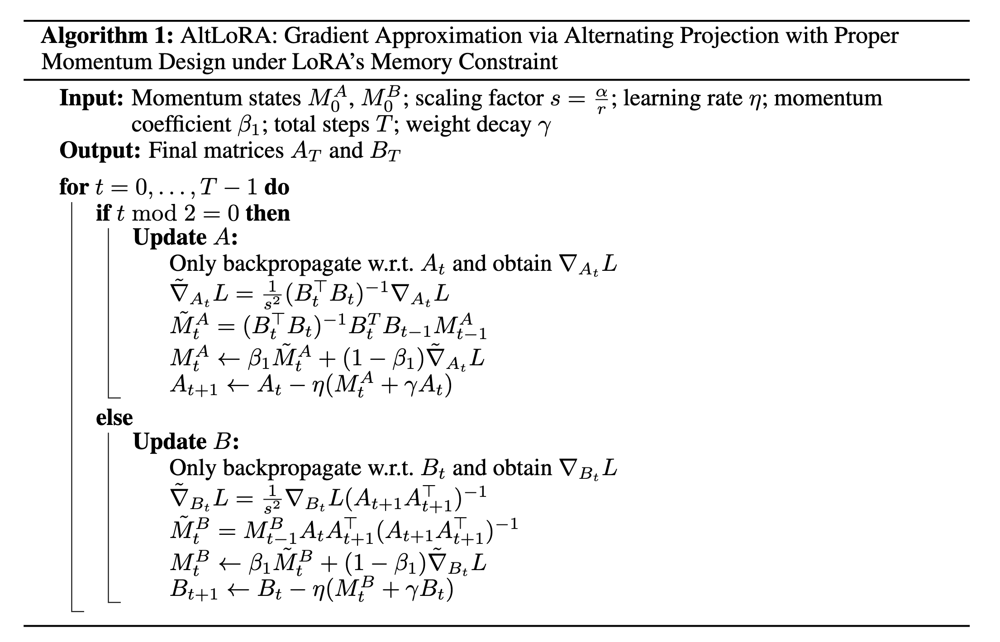
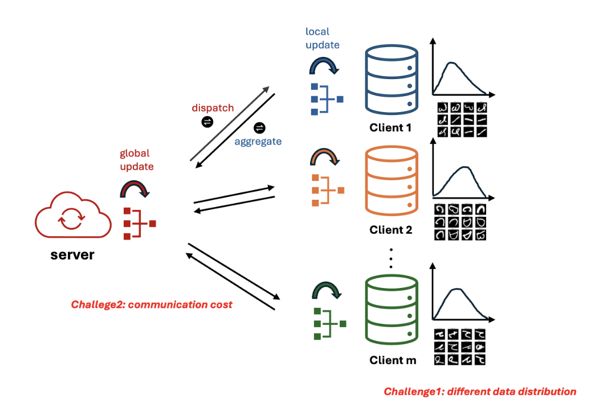

I am currently a Ph.D. Candidate in Statistics at The Pennsylvania State University and am honored to be advised by Prof. Lingzhou Xue. Before that, I obtained my master's degree at Penn State in 2025 and obtained my bachelor's degree in Statistics from Nankai University in 2023. I was also fortunate to be supervised by Prof. Changliang Zou for my undergraduate thesis.
See Google Scholar for an updated list of publications.

